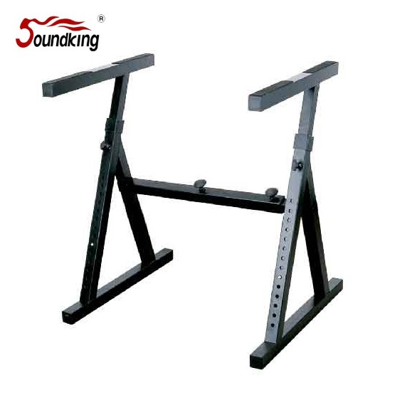

DF084는 키보드와 믹서 겸용으로 사용할 수 있는 대형 테이블 타입 스탠드입니다. 가로 600–1000 mm × 깊이 615 mm의 넓은 상판 공간으로 키보드·믹서·오디오 인터페이스·모니터 스피커까지 한꺼번에 올려 놓을 수 있습니다. 40 kg 허용 하중으로 프로 스튜디오·라이브 FOH에 적합합니다.

키보드와 믹서를 겸용할 수 있는 대형 테이블형 스탠드. 넓은 상판과 40 kg 허용 하중으로 프로 스튜디오·라이브 FOH에 적합합니다.
DF084는 일반 X자 키보드 스탠드와 달리, 테이블 형태의 넓은 상판을 제공하는 겸용 스탠드입니다. 가로 폭을 600 mm부터 1000 mm까지 조절할 수 있어 다양한 크기의 믹서·키보드에 맞춰 세팅이 가능하며, 깊이 615 mm는 대부분의 디지털 믹서·컨트롤러 키보드를 올려 놓기에 충분합니다.
40 kg 허용 하중으로 대형 디지털 믹서(Allen & Heath Qu-32, Yamaha QL5 등)와 마스터 키보드를 동시에 올릴 수 있으며, 높이 590–900 mm는 착석·입식 운용 모두에 대응합니다. 라이브 FOH 믹싱 부스나 홈 스튜디오 중앙 데스크로 활용도가 높습니다.
| 모델명 | DF084 |
|---|---|
| 타입 | Keyboard / Mixer Stand (Table Type) |
| Height | 590 – 900 mm |
| Width × Depth | 600 – 1000 (W) × 615 (D) mm |
| Load Capacity | 40 kg |
| Material | Steel |
| Net Weight | 8.12 kg |
| 권장소비자가 | 132,000 원 / 개 (VAT 포함) |
※ 본 사양 · 단가는 수입원(현대에이브이씨) 2026-01-01 스탠드 가격표 기준입니다.